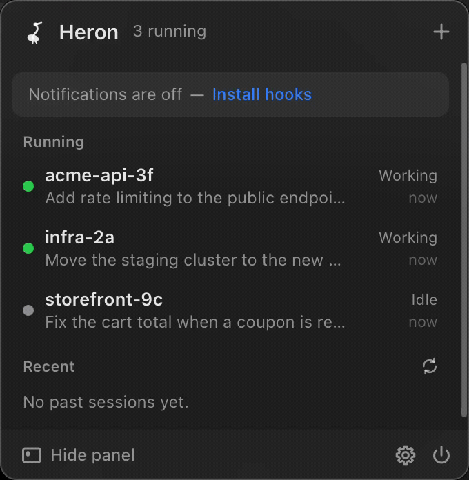

Every Claude Code session, in your menu bar.
Heron watches the Claude Code sessions running on your machine and tells you which one is working, which is idle, and which has been sitting on a permission prompt while you looked away.

What it does
One process, no configuration, and nothing to sign into.
A count you can trust
The menu bar carries the number of live sessions and grows a dot the moment one needs an answer from you.
Start, resume, focus
Press ⌘N, pick a folder, and your terminal opens there running claude. Click a past session to resume it, or a running one to raise its tab.
Notifications that mean something
A banner when Claude asks for permission or finishes a turn. Click it to land in that terminal.
The floating panel
A small always-on-top capsule pinned to the edge of whichever screen you are on. It never steals focus.
Reads what is already there
No daemon, no wrapper around the CLI. It watches the files Claude Code writes and stays out of the way.
There is no network code
Not for telemetry, not for updates, not for anything. That is a property you can check rather than a promise you have to take.
grep -rnE "reqwest|hyper|std::net|TcpStream" src-tauri/src # nothing grep -rnE "fetch\(|XMLHttpRequest|WebSocket" src # nothing
Two scanners enforce it on every push and once a day, because a dependency can be poisoned long after it is merged. A patch that adds an HTTP client fails the build exactly like malware would.
Install
Download a build, or compile it yourself in a minute.
git clone https://github.com/musaJawad004/heron.git cd heron yarn install yarn tauri build
Builds are unsigned: no developer account, no notarization, nothing uploaded. On macOS a downloaded copy needs one right-click, then Open, the first time.
Questions
Does it send my prompts anywhere?
No. There is no network code in the repository at all. The only prompt-derived text it stores is a session title, truncated to 80 characters, kept so the list is readable.
Does it need an API key or a Claude account?
No. Heron never contacts Anthropic. It reads the files the Claude Code CLI already writes on your disk.
Does it work with Claude Code on Windows?
Yes. It reads %USERPROFILE%\\.claude and registers its hooks through PowerShell. The tray icon carries the session count there too.
Will it slow Claude Code down?
No. The hook it installs writes one small file and exits. It is registered as asynchronous with a five second timeout, so it can never block or alter a session.
How do I get notified when Claude asks for permission?
Settings, then Hooks, then Install hooks. That adds six entries to ~/.claude/settings.json after taking a timestamped backup, and Uninstall removes exactly those.